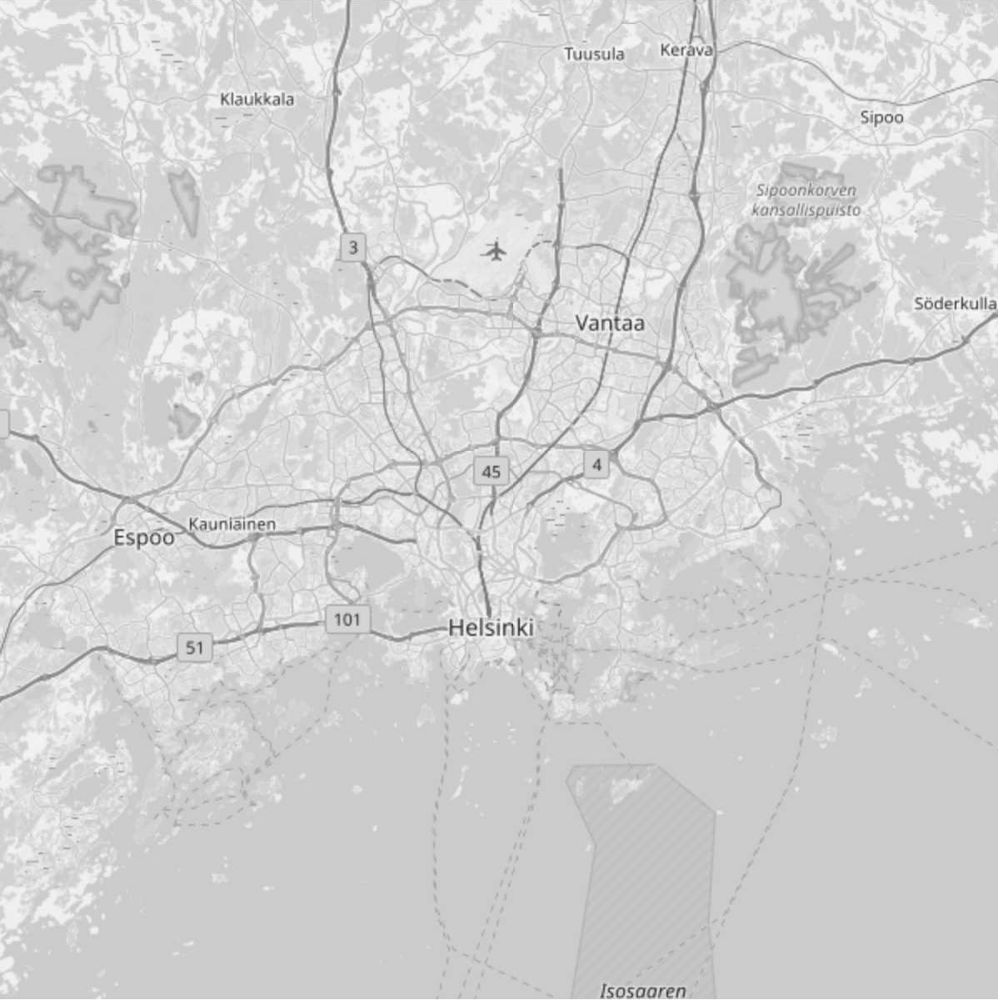

How to Maximize Profits in Real Estate? |
|
|  |
Buying, renovating, and reselling old residential properties in a growing city like Helsinki is profitable almost without an exception. But, picking just the right place to buy, renovate, and resell might help boost profits -- and who would not want that? Operating in areas becoming more affluent might help because gentrification means prices rising faster than in other parts of the city. However, a map of Helsinki looks (almost uniformly) dull when it's just a map. So, while a map like this might help you get from Sörnäinen to Eira, it is not especially useful as it is when it comes to real estate investment. |
| Next | |